Open the app at cbdcollege-scheduler.pages.dev. The first screen is the sign-in form.
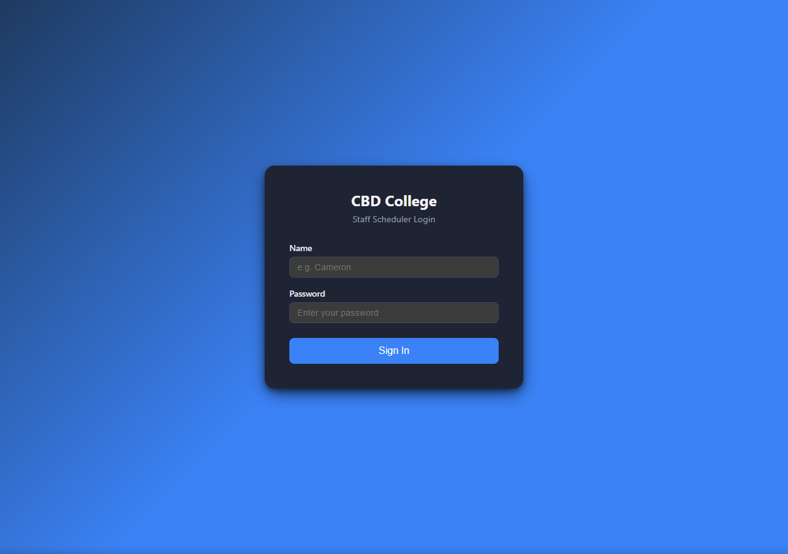
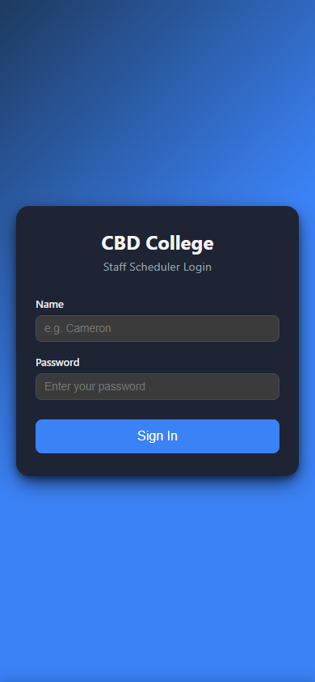
| 1 | Type your email or name in the first field. |
| 2 | Type your password. |
| 3 | Tap Sign In. |
If the password is wrong, a red banner appears beneath the form explaining the error. Trainer/admin accounts are created from the Admin tab once you're inside.
Top-right of the header: Sign Out. Clears the session and returns to the login screen.
The 🌙 / ☀️ button in the header toggles dark mode. New visitors see dark mode by default; your preference is saved and survives sign-outs.
The same header is always visible. Top to bottom on mobile, left-to-right on desktop, it carries your account info, install/push controls, the bell, and the theme toggle.
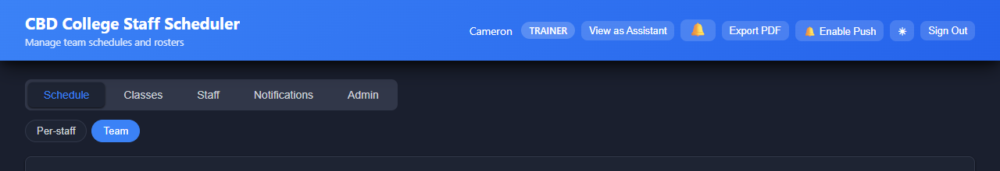
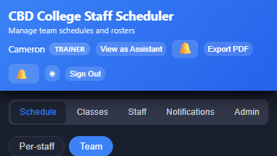
On a phone, the 📱 Install button appears in the header until you've installed the PWA. Tap it and follow the system prompt — on iPhone you'll see step-by-step instructions for using Add to Home Screen.
Tap the 🔔 Enable Push chip in the header. Grant the system prompt. You'll receive a real OS notification for every roster change, even when the app is closed.
Schedule and Staff each contain two sub-views, shown as pill buttons under the main strip when you click them:
Every calendar in the app uses the same visual language for each day cell:
On desktop, cells show the day number plus rich detail — class times, student counts, staff initials, role badges. On mobile, cells collapse to just the day number plus a green check or red cross to keep everything readable on a small screen. Tap any cell to open the full detail modal.
Manually roster a specific staff member on or off individual days.
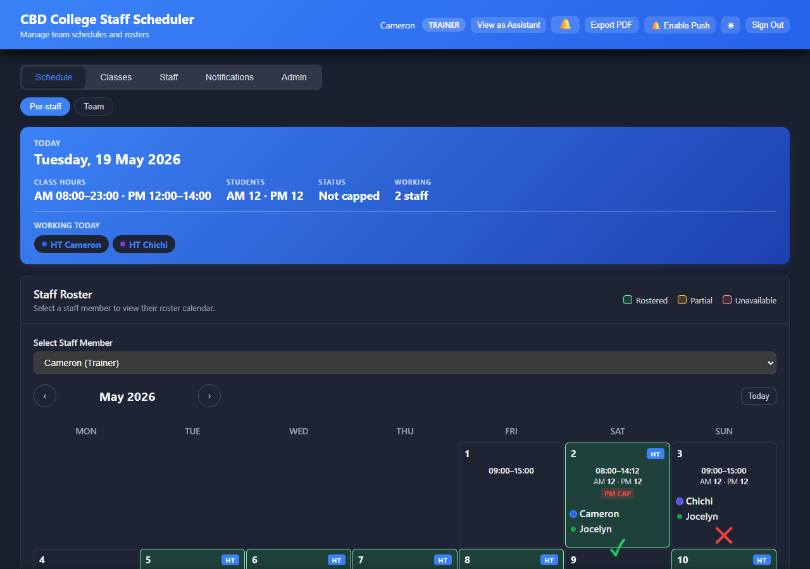
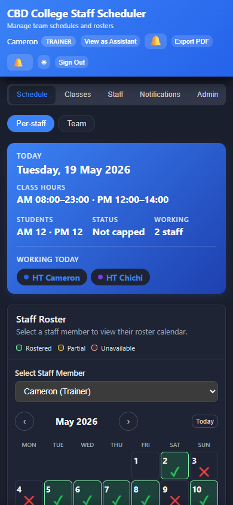
Use the Select Staff Member dropdown above the calendar. The cells refresh to show their availability for the current month.
| 1 | Tap a day cell. |
| 2 | The day editor modal opens. Choose Available, Partial, or Unavailable. |
| 3 | Optional: set a custom start/end time, role (Assistant / Head Trainer), and notes. |
| 4 | Tap Save. |
The cell turns green (available), amber (partial), or red (unavailable). The affected staff member receives a push notification titled "Your roster was updated".
Open the same day modal and tap Remove. The day reverts to the unset state and the staff member is notified.
| 1 | Tap day cells one by one — selected cells get a blue outline. |
| 2 | A floating bar appears at the bottom with bulk actions. |
| 3 | Choose Available, Partial, or Unavailable — or Clear to wipe entries. |
The Clear month button removes every roster entry for the selected staff in the current month. Confirms before acting.
Above the calendar, the blue hero card summarises today's class (times, student counts, who's rostered). It refreshes automatically as you make changes.
The Import Roster button opens the Excel/CSV import wizard. See Section 11 for the full walkthrough.
The Auto-roster button generates a roster from saved availability + priorities. See Section 12.
A read-only overview of who's rostered across every day in the month.
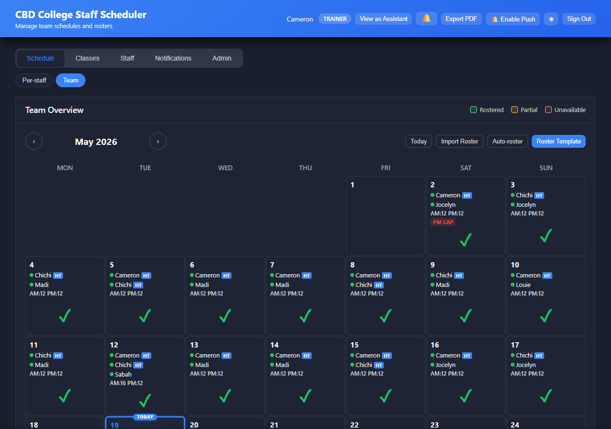
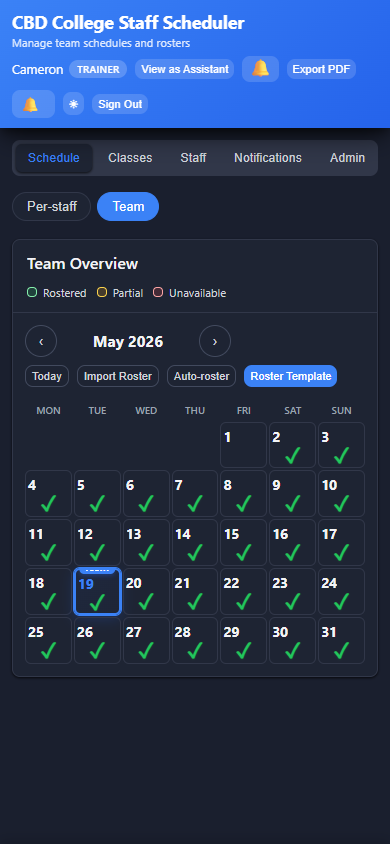
Each desktop cell lists up to three rostered staff by first name and colour dot. Head Trainers show a HT badge. Student counts (AM / PM) appear beneath; AM CAP / PM CAP badges mark sessions at capacity. On mobile, each cell collapses to a single check/cross so the layout fits.
Tap any day to open the day-detail modal — full list of rostered staff, class times, AM/PM student counts, and cap status.
Set the default AM and PM class times, student counts, and capped status for each day of the week. These defaults are applied to every date unless that specific date has been manually overridden.
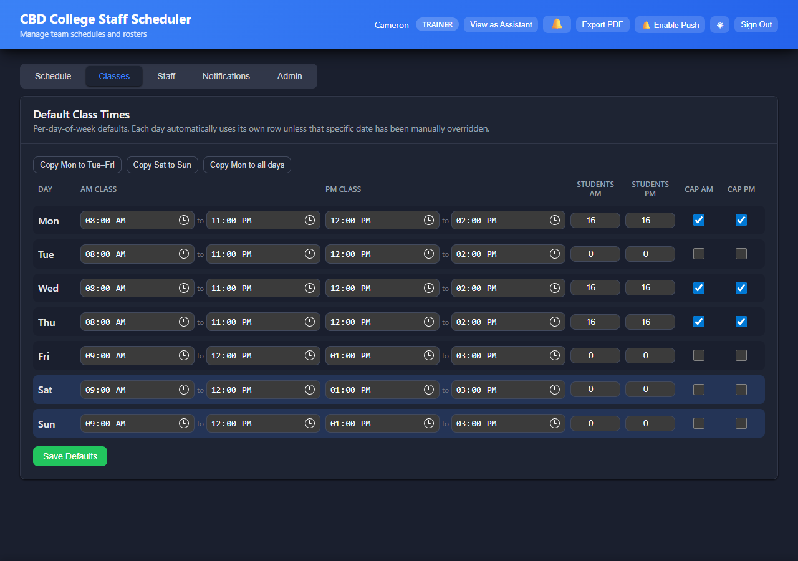
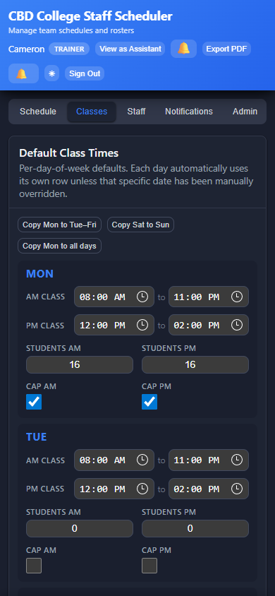
| 1 | Find the row for the day (Mon, Tue, …). |
| 2 | Set AM Class start and end. |
| 3 | Set PM Class start and end. |
| 4 | Type the expected student counts for AM and PM. |
| 5 | Tick Cap AM / Cap PM if either session is at capacity. |
| 6 | Tap Save Defaults. |
After Save Defaults a confirmation appears with two choices:
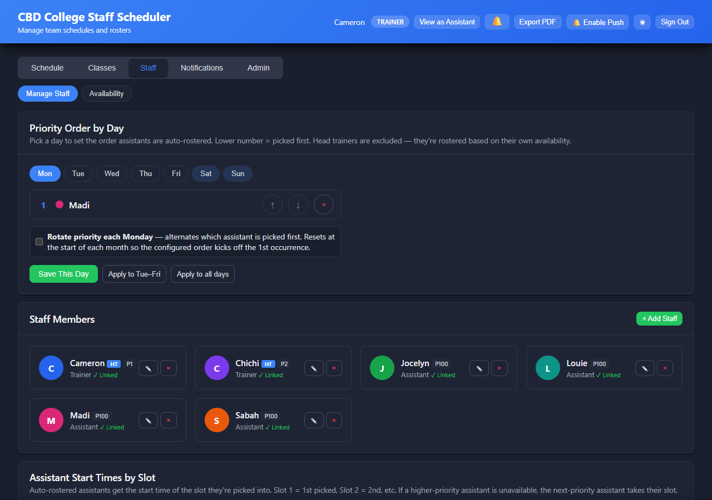
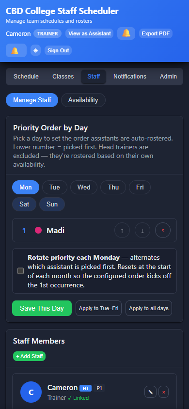
| 1 | Tap + Add Staff in the Staff Members card. |
| 2 | Enter their full name. |
| 3 | Pick a colour (used for their dot/chip everywhere). |
| 4 | Tick Head Trainer if they are one. HTs are excluded from the assistant priority list and are auto-rostered based on their own availability + weekend rotation. |
| 5 | Set their priority (lower = picked first in auto-roster). Leave blank to put them at the end. |
| 6 | Optional: link this staff record to an existing user account so they receive notifications and can see their own roster. |
| 7 | Tap Save. |
| 1 | On their card, tap the pencil icon. |
| 2 | Edit name, colour, role, priority, or linked user as needed. |
| 3 | Tap Save. |
| 1 | On their card, tap the trash icon. |
| 2 | Confirm the deletion. This also removes their roster entries — it cannot be undone from inside the app. |
If a staff member has a sign-in account (so they can see My Roster), edit their staff entry and pick their user in the Linked user dropdown. Until linked, they won't receive in-app or push notifications.
Click Staff in the top nav, then choose Availability from the pill bar that appears. This view lets trainers override any individual assistant's availability for any date.
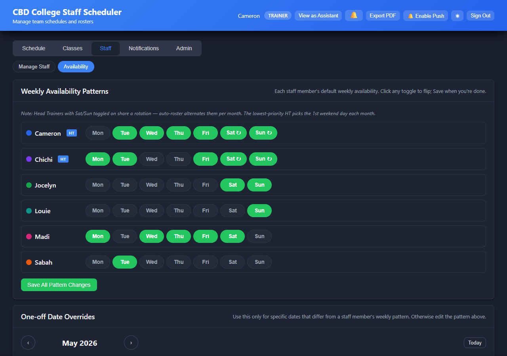
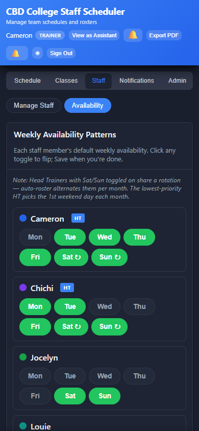
| 1 | Pick the assistant. |
| 2 | Tap a day in their calendar. |
| 3 | Set Available or Not Available, add an optional note. |
| 4 | Tap Save. The assistant receives a targeted push titled "Your availability was updated". |
| 5 | To remove an override, open the same day and tap Clear. |
On the Manage Staff sub-tab. Lower number = picked first when auto-rostering. Head Trainers are excluded — they're rostered based on their own availability.
| 1 | Pick a day (Mon, Tue, …) at the top of the Priority Order card. |
| 2 | Drag assistants up/down to set the order, or type a number into each row. |
| 3 | Tick Rotate priority each [day] if you want the top spot to alternate between two assistants each week. |
| 4 | Tap Save This Day. |
Two helpers to apply the current order quickly: Apply to Tue–Fri, Apply to all days.
Once an assistant is auto-rostered, their start time is determined by which "slot" they were picked into — Slot 1 = first picked, Slot 2 = second, etc. The grid lets you set the start time per slot per AM-class group. Edit any value and tap Save Start Times; the Save / Save & Notify dialog appears.
Tap Save Rules; Save / Save & Notify confirmation appears.
Compose and send arbitrary notifications to one staff member or every signed-in user.
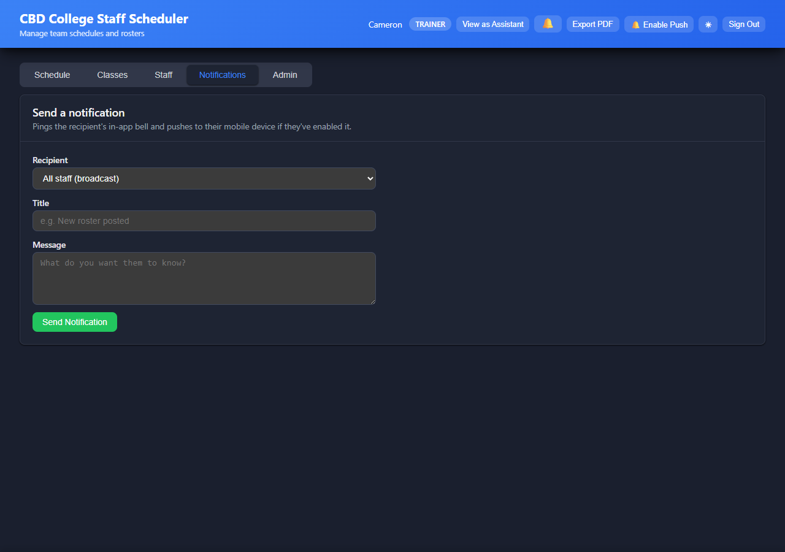
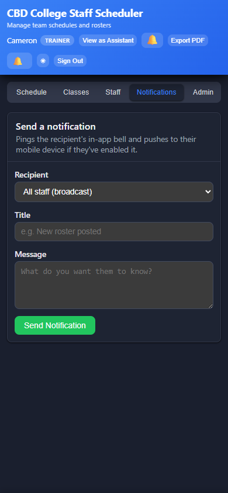
| 1 | Tap Notifications in the top tab strip. |
| 2 | Pick a recipient from the dropdown — All staff (broadcast) or a specific staff member. |
| 3 | Type a title (up to 120 chars) — e.g. "New roster posted". |
| 4 | Type the message body (up to 400 chars). |
| 5 | Tap Send Notification. |
| 6 | Confirm the preview, then tap Send. |
The 🔔 bell in the header opens the in-app notification panel — list of recent notifications targeted to you or sent as broadcasts. Tap an item to mark it read.
Create, edit, and manage user accounts.
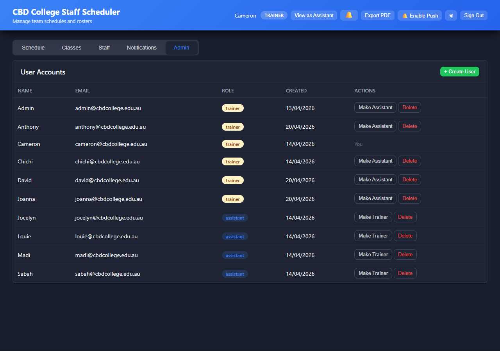
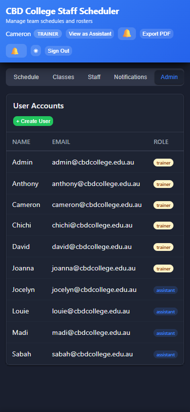
| 1 | Tap + Create User. |
| 2 | Enter their email, a temporary password, and pick a role (Trainer / Assistant). |
| 3 | Submit. The new row appears in the table; share the credentials with the user securely. |
Tap the pencil icon in the Actions column to change role or rename. Tap the trash icon to delete the account.
Tapping any calendar cell — whether on Schedule, Classes, or Overview — opens the day-detail view with everything known about that date.
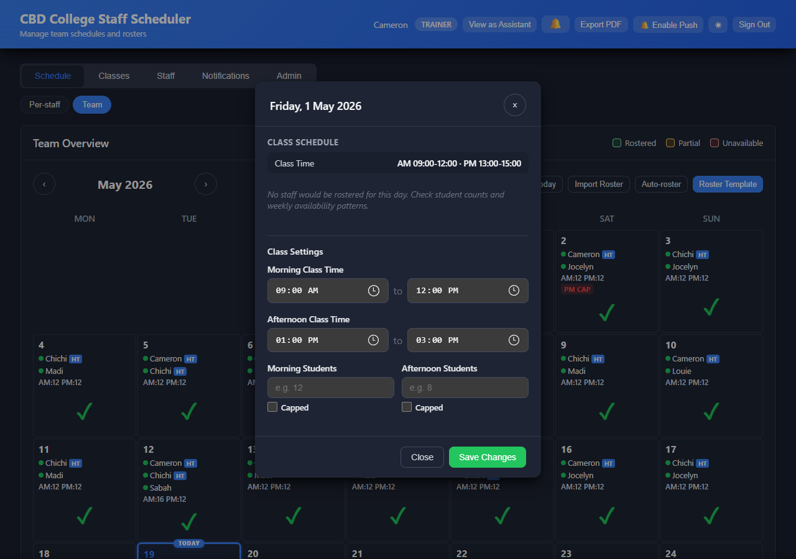
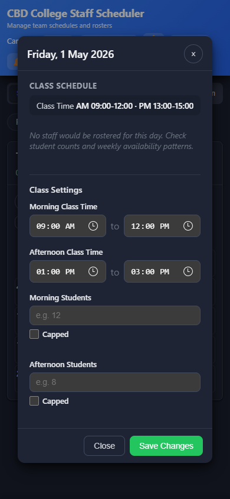
Inside you'll see the day's class times, AM/PM student counts, cap status, and the list of rostered staff with their roles and start times. Trainers can also edit class times for that specific date here, overriding the day-of-week defaults.
Bulk-load a month's worth of class info from an Excel/CSV file produced by your existing roster process.
In the Schedule tab, tap Import Roster. A modal opens.
| 1 | Tap Choose file and pick the .xlsx or .csv export. |
| 2 | The wizard parses the file and shows a preview — one row per detected day, with the matched Head Trainer, AM/PM students, and a tick / warning per day. |
| 3 | Review warnings. Yellow flags indicate something the parser couldn't match (e.g. an unknown trainer name). |
| 4 | Untick any days you don't want to apply. |
| 5 | Tap Apply Import. Confirms once more, then writes the days to the database. |
Generate a draft roster for the visible month based on each staff member's saved availability + priority order + the auto-roster rules.
| 1 | Schedule tab → tap Auto-roster. |
| 2 | The modal shows a preview of every day that would change — additions in green, removals in red. |
| 3 | Review the changes. Untick any days you don't want to apply. |
| 4 | Tap Apply. |
Auto-roster respects:
| 1 | Tap Export PDF in the header. |
| 2 | Pick the month range (defaults to the currently visible month). |
| 3 | Pick which staff to include (default: all). |
| 4 | Tap Export. The browser downloads the PDF. |
The PDF lays out one section per month with a per-day grid showing rostered staff, times, and capacities. Suitable for printing or emailing.
| Trigger | Recipient |
|---|---|
| Trainer changes a staff's roster for any day | That staff member (targeted push) |
| Trainer overrides an assistant's availability | That assistant (targeted push) |
| Default Class Times saved with "Save & Notify" | All staff (broadcast) |
| Auto-roster Rules saved with "Save & Notify" | All staff (broadcast) |
| Slot Times saved with "Save & Notify" | All staff (broadcast) |
| Notifications tab — manual send | Chosen recipient (one or all) |
Useful for verifying what an assistant actually sees in their account before posting a roster.
| 1 | Tap View as Assistant in the header. |
| 2 | The tab strip switches to My Roster / My Availability, and a preview bar offers a staff selector so you can choose whose view you're previewing. |
| 3 | Pick a staff member; the calendar shows exactly what they'd see when signed in. |
| 4 | Tap Back to Trainer View to leave preview mode. |
A date with manually-set class times wins over the day-of-week default. To revert, open that day's class edit modal and clear the times so it falls back to the default.
iOS requires the app to be installed to the home screen before push will deliver. Tap Install, follow the system prompt, then open the installed app from the home screen and tap 🔔 Enable Push.